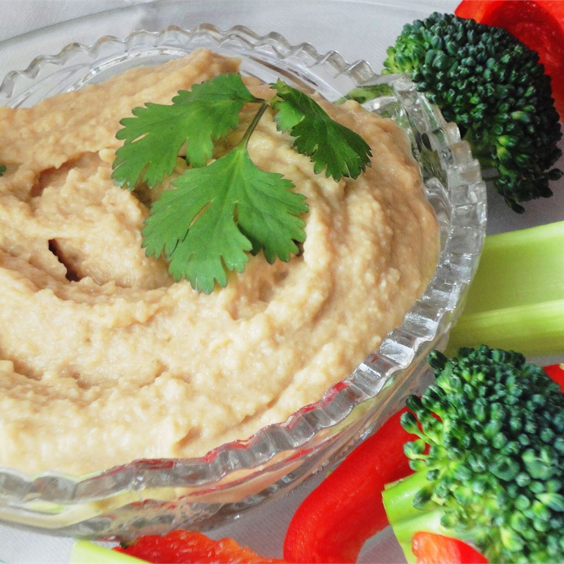

Hummus

Description
Hummus that only takes minutes, and is a favorite with my kids.
It requires 5 mins of preparation, serves to 4 person, takes 5 mins to cook.
Ingredients
- 150 Grams garbanzo beans
- 1 clove garlic, crushed
- 2 teaspoons ground cumin
- 1/2 teaspoon salt
- 1 tablespoon olive oil
Steps
- In a blender or food processor combine garbanzo beans, garlic, cumin, salt and olive oil. Blend on low speed, gradually adding reserved bean liquid, until desired consistency is achieved.
Back to Home